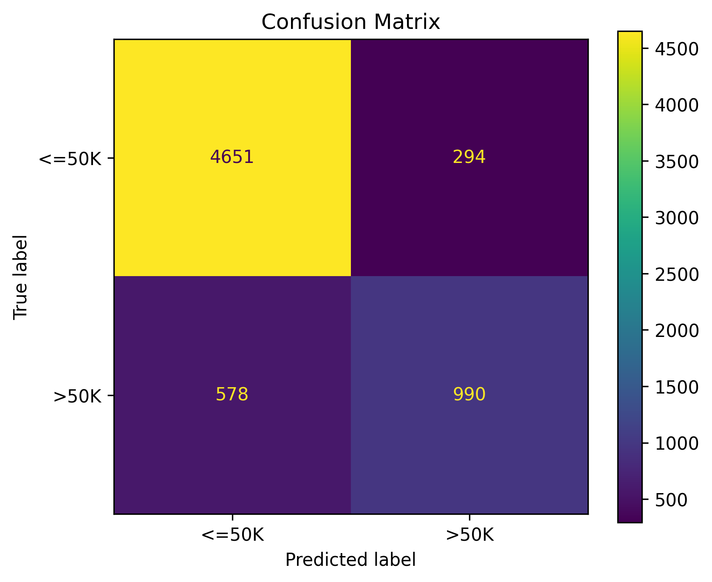
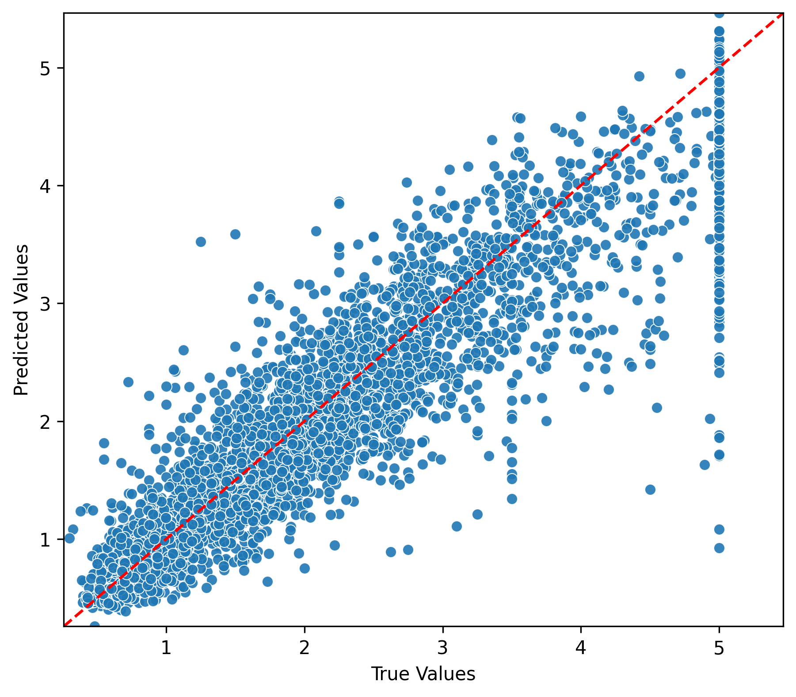
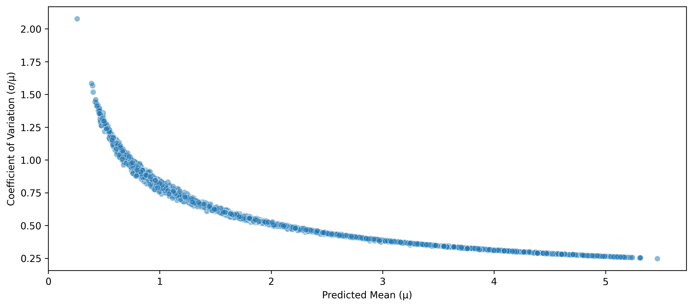

%pip install numpy pandas numba scikit-learn framedisplay --quiet
% Meta %
% Optional argument [#1]: Size modifier (e.g., , ) % #2: Opening delimiter % #3: Closing delimiter % #4: Content
% Common sets % Real numbers % Integers % Natural numbers % Rational numbers % Complex numbers
% Probability and statistics % Expectation % Variance % Covariance % Probability measure % Indicator function
% Linear algebra % Matrix% Vector % Trace % Rank % Range (image) % Projection
% Calculus and analysis % For integrals, e.g., f(x) x % Partial derivative \newcommand{[2]}{ #1} % Partial derivative w/o fraction% Second partial derivative % Gradient % Divergence % Curl
% Set theory % Set% Set builder notation % Union % Intersection % Symmetric difference
% Logic and proofs % Implies % If and only if % End of proof % Contradiction
% Norms and inner products % Norm% Inner product
% Common functions % Minimization problem % Maximization problem % Argument minimum % Argument maximum
% Subject to constraints % Sign function % Span of a set
% Formatting % Absolute value % Parentheses % Brackets % Floor function% Ceiling function
% Asymptotic notations % Big O notation % Small o notation % Big Omega notation % Big Theta notation
% Commonly used in algorithms and complexity % Polynomial time % Polylogarithmic time
% Additional probability notations % Independent and identically distributed % Distributed as
% Fourier transform % Fourier transform % Inverse Fourier transform
% General math % Display style
1 Introduction
In my line of work, Gradient Boosted Trees (GBTs) algorithms such as LightGBM, XGBoost, and CatBoost are the go-to models for tabular data. Not only are they great for fast prototyping, but they also deliver a strong baseline performance that is hard to beat. Having said that, these libraries are complex pieces of software that don’t offer the flexibility to customize and apply research ideas. I often found myself spending hours going through thousands of lines of source code, only to be more confused at the end. Granted, the maintainers have a high incentive to optimize for accuracy and speed, not so much for code readability and extensibility.
That’s why I decided to implement my own GBT library from scratch, with a balance between simplicity and functionality. I’ve gone through the original papers, and made a decision to implement the components that I find most essential. There’s always room for improvement but I didn’t want to make it too complex, as that would reduce its educational value.
NoteNote
This is the second post in my “From Scratch” series. The first covered implementing LSTMs using only NumPy here.
2 What you’ll find here
In this post I’ll walk through the implementation of each component one by one. The following features have been implemented:
- Histogram-based splitting [LightGBM/XGBoost style]
- Multi-output decision trees
- Supports multivariate regression, multi-class classification, and uncertainty estimation
- Leaf-wise binary tree growth [LightGBM]
- Categorical feature handling
- via ordered target statistics [CatBoost]
- via gradient-based ordering, i.e. Fisher’s statistics [LightGBM]
- L1 and L2 regularization
- Gradient-based One-Side Sampling (GOSS) [LightGBM]
- Data subsampling
- Automatic handling of missing values. Use
np.nanto designate missing values [XGBoost]- Evaluate gain for directing nulls to left vs right child at each split
- Path smoothing with exponential-decaying weights
- Regularize leaf predictions by blending with ancestor values along the path
One thing I found interesting is how much these libraries have evolved since their original publications, and how much they borrow ideas from each other. For example, if you were to use LightGBM and XGBoost using their default parameters, you’d find they’re functionally very similar.
3 The math
This is a refresher for the math behind GBTs, which I’ll try to keep brief. The main idea is to sequentially add decision trees to an ensemble, where the objective is to minimize the difference between the true labels and the output of the existing ensemble using gradient descent:
\[ \min_{F} \sum_{(x, y) \in \mathcal{D}} \mathcal{L}\left(y, F(x)\right) \tag{1}\]
where \(\displaystyle F_m(x) = \sum_{i=0}^{m} T_i(x)\) is an additive ensemble of trees. Since we’re optimizing over functions (trees) rather than parameters, this approach is termed functional gradient descent.
At iteration \(k\), given current predictions \(F_{k-1}(x)\), we fit a new tree \(T_k(x)\) that moves us in the direction of reducing \(\mathcal{L}\). Using a second-order Taylor approximation (Newton-Raphson), for a sample \((x_i, y_i)\) we have:
\[ J = \mathcal{L}(y_i, F_{k-1}(x_i) + T_k(x_i)) \approx \mathcal{L}(y_i, F_{k-1}(x_i)) + g_i T_k(x_i) + \frac{1}{2} h_i T_k^2(x_i) \tag{2}\]
where \(g_i = \frac{\partial \mathcal{L}}{\partial F}\) (gradient) and \(h_i = \frac{\partial^2 \mathcal{L}}{\partial F^2}\) (Hessian). Since the first term is constant with respect to \(T_k\), we only need to minimize \(g_i T_k(x_i) + \frac{1}{2} h_i T_k^2(x_i)\). For samples in a leaf node \(S\), the optimal output value \(v = T_k(x_i) \quad\forall x_i \in S\) is found by setting the derivative of Eq. 2 to zero:
\[ \displaystyle\frac{\partial}{\partial v} \sum_{i \in S} \left(g_i v + \frac{1}{2} h_i v^2\right) = 0 \implies v = -\frac{\sum_{i \in S} g_i}{\sum_{i \in S} h_i} \tag{3}\]
We can also add an L2 regularization term \(\frac{1}{2} \lambda v^2\) to penalize large magnitude values, with \(\lambda\) being the strength hyperparameter. The loss function becomes:
\[ J_S = \sum_{i \in S} \left(g_i v + \frac{1}{2} h_i v^2\right) + \frac{1}{2} \lambda v^2 \tag{4}\]
and consequently, the optimal leaf value becomes:
\[ v = -\frac{\sum_{i \in S} g_i}{\sum_{i \in S} h_i + \lambda} \tag{5}\]
Note that this is even before we considered how to split the tree nodes, but Eq. 5 stands on its own for a fixed tree structure. We can use the leaf value to compute the contribution of a node to the overall loss reduction, by substituting \(v\) from Eq. 5 into Eq. 4, and negating it:
\[ \text{Gain}(S) = \frac{1}{2} \frac{(\sum_{i \in S} g_i)^2}{\sum_{i \in S} h_i + \lambda} \]
\(Gain(S)\) represents how much the loss would decrease if we created a node covering subset \(S\) of samples in the dataset. Using this, we can evaluate the contribution of a node split by adding the contributions of its two child nodes and subtracting the parent node’s contribution, since the parent node will no longer be a leaf after the split. Assuming \(L \subseteq S\) and \(R = S \setminus L\) are the left and right child nodes after the split, the gain from the split is:
\[ \text{SplitGain}(S, L, R) = \text{Gain}(L) + \text{Gain}(R) - \text{Gain}(S) \tag{6}\]
SplitGain is what we maximize during tree construction, and \(>0\) is the minimum threshold for a split to be considered beneficial. At each node, we evaluate all features and all possible split thresholds, and select the split with the highest gain. Then, among all node candidates to split, we select the one with the highest SplitGain to actually perform the split. This is called leaf-wise growth.
To extend this to multi-output settings, we could either build separate trees for each output, or, what I implemented here is to treat \(T(x)\), \(v\), \(g_i\), and \(h_i\) as vectors. The derivations remain mostly the same, except that we now sum over the per-output gain to get the overall gain.
4 Implementation
The source code is organized into the following modules, which I’ll go through one by one in order:
- Gradient Boosted Model (GBM): The model class that ties everything together.
- Data Preprocessing: Preprocessing categorical and numerical features, and preparing data for training and inference.
- Node and Tree Structures: Data structures for decision tree and its nodes.
- Tree Optimization: The core logic for fitting decision trees using histogram-based splitting and leaf-wise growth.
- Loss Functions and Distributions: Implementing loss functions.
- Utility Functions: A few utility functions used throughout the code.
4.1 Gradient Boosted Model (GBM)
This is the main class that ties everything together. It initializes the distribution, data handler, and manages the training process. I think it’s helpful to have a high-level view first before diving into the implementation of each component. The API deliberately mirrors the fit/predict pattern from scikit-learn and familiar GBT libraries but the internals are simple enough to experiment with.
gbm.py
Required imports
1import numpy as np
2import pandas as pd
3from tqdm.auto import tqdmDataPreprocessor handles feature encoding and binning and train/test transformations
4from .data import DataPreprocessor
5from .distributions import DistributionTreeGrower handles the logic of growing individual trees
6from .grower import TreeGrower
7from .utils import truncGradient Boosted Model (GBM)
This is the user-facing class for training and making predictions.
Parameters
distribution: Distribution- The loss distribution to optimize.
learning_rate: float, default=0.1- The learning rate (shrinkage factor) for each tree's contribution.
n_trees: int, default=100- The number of trees to grow in the ensemble.
n_leaves: int, default=20- The maximum number of leaves per tree.
max_depth: int, default=6- The maximum depth of each tree.
min_samples_split: int, default=2- The minimum number of samples required to split a node.
min_weight_leaf: float, default=20- The minimum sum of instance weights required in a leaf node for a split to be considered.
min_gain_to_split: float, default=0.0- The minimum gain required to perform a split. Referred to as \(\gamma\) in some literature.
objective_weight: List[float], optional- Weights for multi-output objectives. If the distribution is multivariate, this specifies the relative importance of each output dimension.
l1_regularization: float, default=0.0- L1 regularization term on leaf values.
l2_regularization: float, default=0.0- L2 regularization term on leaf values.
feature_fraction: float, default=1.0- The fraction of features to subsample for each tree (Values between 0 and 1). This helps with regularization.
samples_fraction: float, default=1.0- The fraction of training samples to subsample for each tree. Values between 0 and 1.
goss_top_rate: float, optional- Whether to use GOSS sampling. If set, specifies the top fraction of samples (by absolute gradient) to keep.
goss_bottom_rate: float, optional- If using GOSS, specifies the bottom fraction of samples (by absolute gradient) to keep.
goss_rescale_bottom: bool, optional- Whether to rescale the weights of the bottom samples in GOSS to maintain the overall weight sum.
path_smoothing_strength: float, default=0.0- Strength of path smoothing to apply to leaf values after tree is grown.
max_bins: int, default=255- The maximum number of bins to use for numerical features.
max_categories: int, default=100- The maximum number of unique categories for a feature to be treated as categorical. Otherwise, it is encoded as numerical using label encoding.
n_permutations: int, default=10- Number of random permutations to use for ordered target statistics encoding of categorical features (CatBoost-style).
prior_strength: float, default=1.0- The strength of the prior for target statistics encoding.
seed: int, optional- Random seed for reproducibility.
verbose: bool, default=True- Whether to print progress messages during training.
8class GradientBoostedModel:
9 def __init__(
10 self,
11 distribution: Distribution,
12 learning_rate: float = 0.1,
13 n_trees: int = 100,
14 n_leaves: int = 20,
15 max_depth: int = 6,
16 min_samples_split: int = 2,
17 min_weight_leaf: float = 20,
18 min_gain_to_split: float = 0.0,
19 objective_weight: list[float] = None,
20 l1_regularization: float = 0.0,
21 l2_regularization: float = 0.0,
22 feature_fraction: float = 1.0,
23 samples_fraction: float = 1.0,
24 goss_top_rate: float = None,
25 goss_bottom_rate: float = None,
26 goss_rescale_bottom: bool = False,
27 path_smoothing_strength: float = 0.0,
28 max_bins: int = 255,
29 max_categories: int = 100,
30 n_permutations: int = 10,
31 prior_strength: float = 1.0,
32 seed: int = None,
33 verbose: bool = True,
34 ):
35 self.distribution = distribution
36 self.learning_rate = learning_rate
37 self.n_trees = n_trees
38 self.n_leaves = n_leaves
39 self.max_depth = max_depth
40 self.min_samples_split = min_samples_split
41 self.min_weight_leaf = min_weight_leaf
42 self.min_gain_to_split = min_gain_to_split
43 self.objective_weight = objective_weight
44 self.l1_regularization = l1_regularization
45 self.l2_regularization = l2_regularization
46 self.feature_fraction = feature_fraction
47 self.samples_fraction = samples_fraction
48 self.goss_top_rate = goss_top_rate
49 self.goss_bottom_rate = goss_bottom_rate
50 self.goss_rescale_bottom = goss_rescale_bottom
51 self.path_smoothing_strength = path_smoothing_strength
52 self.max_bins = max_bins
53 self.max_categories = max_categories
54 self.n_permutations = n_permutations
55 self.prior_strength = prior_strength
56 self.seed = seed
57 self.verbose = verboseAttributes to be set during fitting
58 self.data_processor_ = None
59 self.initial_params_ = None
60 self.trees_ = []
61 self.is_fitted_ = FalseFit the Gradient Boosted Model to the data. This method should give you a high-level overview of the training process.
X: pd.DataFrame- The input features.
y: np.ndarray- The target values.
sample_weight: np.ndarray, optional- Sample weights for each instance.
62 def fit(self, X: pd.DataFrame, y: np.ndarray, sample_weight: np.ndarray = None):
63 if sample_weight is None:
64 sample_weight = np.ones(len(X))Preprocess data and compute feature info
65 self.data_processor_ = DataPreprocessor(
66 max_categories=self.max_categories,
67 max_bins=self.max_bins,
68 n_permutations=self.n_permutations,
69 prior_strength=self.prior_strength,
70 seed=self.seed,
71 )
72 self.data_processor_.fit(X, y, sample_weight)Transform input data into numerical array
73 inputs, targets = self.data_processor_.transform(
74 X, y, sample_weight, mode="train"
75 )Initialize tree grower. This handles the logic of growing individual trees.
76 grower = TreeGrower(
77 distribution=self.distribution,
78 learning_rate=self.learning_rate,
79 objective_weight=self.objective_weight,
80 l1_regularization=self.l1_regularization,
81 l2_regularization=self.l2_regularization,
82 min_weight_leaf=self.min_weight_leaf,
83 max_leaves=self.n_leaves,
84 max_depth=self.max_depth,
85 goss_top_rate=self.goss_top_rate,
86 goss_bottom_rate=self.goss_bottom_rate,
87 goss_rescale_bottom=self.goss_rescale_bottom,
88 feature_fraction=self.feature_fraction,
89 samples_fraction=self.samples_fraction,
90 min_samples_split=self.min_samples_split,
91 min_gain_to_split=self.min_gain_to_split,
92 seed=self.seed,
93 )Initialize the ensemble. Query the Distribution object for initial parameters.
94 self.initial_params_ = self.distribution.init_params(y)
95 predictions = np.full((len(y), len(self.initial_params_)), self.initial_params_)Print initial loss
96 if self.verbose:
97 loss = -self.distribution.log_prob(y, predictions).sum()
98 print(f"Initial loss: {trunc(loss)}")Grow trees one by one
99 for i in tqdm(range(self.n_trees)):
100 tree = grower.grow(
101 inputs=inputs,
102 features_info=self.data_processor_.features_info_,
103 targets=targets,
104 sample_weight=sample_weight,
105 current_predictions=predictions,
106 )If no valid tree could be grown, stop early. Could happen due to insufficient data or no tangible gain.
107 if tree is None:
108 breakApply path smoothing if specified
109 if self.path_smoothing_strength > 0.0:
110 tree.apply_smoothing(self.path_smoothing_strength)Append the new tree and update predictions
111 self.trees_.append(tree)
112 predictions += self.learning_rate * tree.predict(inputs)
113
114 if self.verbose:
115 loss = -self.distribution.log_prob(y, predictions).sum()
116 print(f"Loss after tree {i + 1}: {trunc(loss)}")117 self.is_fitted_ = True
118 return selfMake inferences using the fitted model.
X: pd.DataFrame- The input features.
- return_type : str or None, default="predict"
- Transformation to apply to raw predictions. Options depend on the distribution. It basically passes the raw predictions to the distribution's corresponding method. If None, returns raw predictions.
119 def predict(self, X, return_type="predict"):
120 if not self.is_fitted_:
121 raise ValueError("Model not fitted. Call fit() first.")
122
123 X = self.data_processor_.transform(X)Start with the initial parameters and add contributions from each tree
124 raw_prediction = np.full(
125 (len(X), len(self.initial_params_)), self.initial_params_
126 )
127 for tree in self.trees_:
128 raw_prediction += self.learning_rate * tree.predict(X)Return the desired output type. Calls the corresponding implementation in the Distribution class.
129 if return_type is not None:
130 return getattr(self.distribution, return_type)(raw_prediction)
131 return raw_prediction4.2 Data Preprocessing
This module handles categorical feature encoding and numerical feature binning. The transformations are used both during training and inference time.
data.py
Data preprocessing utilities module. Defines classes and functions for handling feature information and preprocessing datasets.
1from dataclasses import dataclass
2
3import numpy as np
4import pandas as pd
5
6from .utils import map_arrayFeatureInfo
A class to store information about a feature in the dataset.
Attributes
name: str- The name of the feature/column.
index: int- The position of the feature in the input array.
type: str, optional- The type of the feature:
numerical,categorical, orcategory_as_numeric.
- The type of the feature:
bins: np.ndarray, optional- The bin edges for numerical features or categorical features treated as numeric.
categories: np.ndarray, optional- The unique categories for categorical features.
target_statistics: dict, optional- A mapping from category to its target statistic for categorical features encoded as numeric.
7@dataclass
8class FeatureInfo:
9
10 name: str
11 index: int
12 type: str = None
13 bins: np.ndarray = None
14 categories: np.ndarray = None
15 target_statistics: dict = NoneDataPreprocessor
A data preprocessor for handling numerical and categorical features. It's used during both training and prediction.
Parameters
max_categories: int, default=100- Maximum number of unique categories for a feature to be treated as categorical. Otherwise, it is encoded as numerical using label encoding.
max_bins: int, default=255- Number of bins to use for numerical features and categorical features treated as numeric.
n_permutations: int, default=10- Number of random permutations to use for ordered target statistics encoding of categorical features.
seed: int, optional- Random seed for reproducibility.
16class DataPreprocessor:
17 def __init__(
18 self,
19 max_categories: int = 100,
20 max_bins: int = 255,
21 n_permutations: int = 10,
22 prior_strength: float = 1.0,
23 seed: int = None,
24 ):
25 self.max_categories = max_categories
26 self.max_bins = max_bins
27 self.n_permutations = n_permutations
28 self.prior_strength = prior_strength
29 self.random = np.random.default_rng(seed)A list of FeatureInfo objects, one for each feature in the dataset. To be populated
during the fit method.
30 self.features_info_ = NoneCreate histograms of features in the dataset. Categorical and numerical features are handled differently.
31 def fit(
32 self, X: pd.DataFrame, y: np.ndarray = None, sample_weight: np.ndarray = None
33 ) -> "DataPreprocessor":Create feature info for each column
34 features_info = []Identify categorical features
35 categorical_features = X.select_dtypes(
36 include=["category", "object", "string"]
37 ).columnsProcess each feature individually
38 for index, col in enumerate(X.columns):
39 info = FeatureInfo(name=col, index=index)
40 values = None
41 category_as_numeric = FalseHandle categorical features
42 if col in categorical_features:Use pandas' categorical type to get the unique categories. NaN values are considered as a separate category (-1 code)
43 category_col = X[col].astype("category")
44 info.categories = category_col.cat.categoriesIf too many categories, use CatBoost-style target encoding
45 if len(info.categories) > self.max_categories:
46 category_as_numeric = True
47 assert y is not None and sample_weight is not None
48 target_mean = np.average(y, weights=sample_weight)Convert categories to codes for grouping
49 codes = category_col.cat.codes.to_numpy()Aggregate \(y * w\) and \(w\) by category. Ignore -1 (NaN) codes.
50 valid = codes >= 0
51 w_sum = np.bincount(
52 codes[valid], weights=(y * sample_weight)[valid]
53 )
54 w_total = np.bincount(codes[valid], weights=sample_weight[valid])Compute TS for category \(c\) as: $$TS(c) = \frac{\sum_{i \in c} w_i y_i + \alpha \cdot \mu}{\sum_{i \in c} w_i + \alpha}$$ where \(\mu\) is the global weighted mean of the target, and \(\alpha\) is the prior strength.
55 info.target_statistics = dict(
56 enumerate(
57 (w_sum + self.prior_strength * target_mean)
58 / (w_total + self.prior_strength)
59 )
60 )Map the codes to target statistics for binning in the next step
61 values = map_array(codes, info.target_statistics)It's a categorical feature. No binning needed.
62 else:
63 info.type = "categorical"Bin numerical and categorical-as-numeric features
64 if col not in categorical_features or category_as_numeric:
65 if values is None:
66 values = X[col].to_numpy()Compute quantile-based bins with no interpolation
67 quantiles = np.nanquantile(
68 values,
69 np.linspace(0.0, 1.0, endpoint=True, num=self.max_bins + 1),
70 method="nearest",
71 )
72 info.bins = np.unique(quantiles).astype("float64")Set feature type
73 if col in categorical_features:
74 info.type = "category_as_numeric"
75 else:
76 info.type = "numerical"77 features_info.append(info)78 self.features_info_ = features_info
79 return selfTransform the dataset into a numerical numpy array based on the fitted feature information.
80 def transform(
81 self,
82 X: pd.DataFrame,
83 y: np.ndarray = None,
84 sample_weight: np.ndarray = None,
85 mode="test",
86 ) -> np.ndarray:
87 array = X[[info.name for info in self.features_info_]].values.copy()
88 if y is not None:
89 if isinstance(y, pd.Series):
90 y = y.to_numpy()
91 y = y.astype("float64")
92
93 for i, info in enumerate(self.features_info_):
94 if info.type == "categorical":Transform categorical features to integer codes. The reason we use integer code rather than keeping original string values is that the transformed dataset is supposed to be a homogeneous float64 numpy array.
95 codes = pd.Categorical(
96 X[info.name], categories=info.categories
97 ).codes.astype("float64")
98 codes[codes == -1.0] = np.nan
99 array[:, i] = codesCatBoost-style target statistics encoding. Train and test modes differ.
100 elif info.type == "category_as_numeric":
101 category_col = pd.Categorical(X[info.name], categories=info.categories)If test mode, use the precomputed target statistics mapping
102 if mode == "test":
103 array[:, i] = map_array(category_col.codes, info.target_statistics)For training mode, compute ordered target statistics averaged over multiple random permutations
104 elif mode == "train":
105 assert y is not None and sample_weight is not None
106 target_mean = np.average(y, weights=sample_weight)
107 codes = category_col.codes.astype("int64")
108 encodings = np.empty((len(X), self.n_permutations))
109 n_cats = max(codes) + 1We impose a random order on the data and for every sample \(i\), compute the target statistic using only samples that come before it in this random order. This is to avoid target leakage.
110 for p in range(self.n_permutations):
111 group_sum = np.zeros(n_cats)
112 group_weight = np.zeros(n_cats)
113 for idx in self.random.permutation(len(X)):
114 c = codes[idx]If the category is -1 (NaN), assign NaN and continue
115 if c < 0:
116 encodings[idx, p] = np.nan
117 continueSame formula as in fit(), but using only previous samples
118 encodings[idx, p] = (
119 group_sum[c] + self.prior_strength * target_mean
120 ) / (group_weight[c] + self.prior_strength)
121 group_sum[c] += y[idx] * sample_weight[idx]
122 group_weight[c] += sample_weight[idx]Average over all permutations
123 array[:, i] = np.mean(encodings, axis=1)124 array = array.astype("float64")
125 if y is not None:
126 return array, y
127 return array4.3 Node and Tree Structures
Here we define the skeleton of a decision tree and its nodes. Each node stores information about split criterion, value, …, and child nodes.
The implementation is kept lean to focus more on the structure rather than optimization details.
tree.py
1from dataclasses import dataclass, field
2from typing import Any, Dict, List, Tuple, Union
3
4import numpy as npA class representing a node in a decision tree.
Attributes
depth: int- The depth of the node in the tree.
sample_indices: List[int]- The indices of training samples that reach this node. Used during training.
parent: Node, optional- The parent node. None for the root node.
children: Dict[str, Node]- The child nodes, typically with keys "left" and "right".
gradient_sum: np.ndarray- The sum of gradients for samples in this node.
hessian_sum: np.ndarray- The sum of hessians for samples in this node.
l1_regularization: float- The L1 regularization term.
l2_regularization: float- The L2 regularization term.
feature: str, optional- Feature name used for splitting at this node.
feature_index: int, optional- Index of the feature in the input array.
split_point: Union[float, Tuple], optional- The split point for numerical features or a tuple of categories for categorical features.
nulls_to_left: bool, optional- Whether null values go to the left child.
smoothed_value: np.ndarray, optional- The smoothed value for the node, used for prediction. Only set for leaf nodes.
info: Dict[str, Any]- Additional information about the node.
5@dataclass
6class Node:
7
8 depth: int
9 sample_indices: List[int] = field(default_factory=list)
10 parent: "Node" = None
11 children: Dict[str, "Node"] = field(default_factory=dict)
12 gradient_sum: np.ndarray = None
13 hessian_sum: np.ndarray = None
14 l1_regularization: float = 0.0
15 l2_regularization: float = 0.0
16 feature: str = None
17 feature_index: int = None
18 split_point: Union[float, Tuple] = None
19 nulls_to_left: bool = None
20 smoothed_value: np.ndarray = None
21 info: Dict[str, Any] = field(default_factory=dict)Calculate the leaf value using the formula: $$ \text{Value} = - \frac{\text{sign}(G) \cdot \max(|G| - \lambda_{\text{L1}}, 0)}{H + \lambda_{\text{L2}}} $$
22 def value(self, smooth: bool = True) -> float:
23 if smooth and self.smoothed_value is not None:
24 return self.smoothed_value
25
26 gradient = self.gradient_sum
27 if self.l1_regularization:
28 gradient = np.sign(gradient) * np.maximum(
29 np.abs(gradient) - self.l1_regularization, 0.0
30 )
31 return -gradient / (self.hessian_sum + self.l2_regularization + 1e-16)Returns the type of the node: InternalNode, Leaf, or VirtualNode.
VirtualNode is a special node used only during training to represent nodes that
have not been instantiated yet.
32 @property
33 def type(self) -> str:
34 if self.children:
35 return "InternalNode"
36 elif self.gradient_sum is not None and self.hessian_sum is not None:
37 return "Leaf"
38 else:
39 return "VirtualNode"Returns a boolean mask indicating which samples go to the left child.
Parameters
array: np.ndarray- The input feature array.
input_type: str, default="all"- Specifies whether the input array contains all features ("all") or just the feature used for splitting ("feature").
40 def criterion(self, array: np.ndarray, input_type: str = "all") -> np.ndarray:
41 if input_type == "all":
42 array = array[:, self.feature_index]
43 null_mask = np.isnan(array) & self.nulls_to_left
44 if isinstance(self.split_point, tuple):
45 return null_mask | np.isin(array, self.split_point[0])
46 else:
47 return null_mask | (array <= self.split_point)String representation of the node. Used for visualization and debugging.
48 def __repr__(self):
49 if self.children:
50 return f"{self.type}(feature='{self.feature}', split_point={self.split_point}, samples={len(self.sample_indices)})"
51 elif self.gradient_sum is not None and self.hessian_sum is not None:
52 return f"{self.type}(value={self.value().round(decimals=4)}, samples={len(self.sample_indices)})"
53 else:
54 return f"{self.type}(samples={len(self.sample_indices)})"Helper method to update a dataclass's fields.
55 def update(self, **kwargs):
56 for key, value in kwargs.items():
57 if not hasattr(self, key):
58 raise AttributeError(f"Node has no attribute '{key}'")
59 setattr(self, key, value)A structure representing a decision tree.
60class Tree:
61 def __init__(self, root: Node = None):
62 self.root = rootMake predictions for the input samples x starting from the given node (or root if None).
We traverse the tree from the root to the leaves based on the split criteria at each node, and aggregate
the leaf values to produce the final predictions.
Parameters
x: np.ndarray- The input samples for which predictions are to be made, with shape (n_samples, n_features).
node: Node, optional- The current node in the tree from which to start predictions. If None, starts from the root node.
Returns
output: np.ndarray- The leaf values for each input sample, with shape (n_samples, n_outputs).
63 def predict(self, x: np.ndarray, node: Node = None):
64 node = node or self.root
65 n_samples = len(x)If the node is an internal node, split the samples and recurse
66 if node.children:
67 mask = node.criterion(x)
68 n_output = len(node.children["left"].value())
69 output = np.zeros((n_samples, n_output))
70 output[mask] = self.predict(x[mask], node.children["left"])
71 output[~mask] = self.predict(x[~mask], node.children["right"])If in the leaf node, return the leaf value for all samples
72 else:
73 output = np.tile(node.value(), (n_samples, 1))
74 return outputReturns the number of leaves in the tree.
75 def __len__(self):
76 return len(self.leaves)Iterator to traverse all nodes in the tree using depth-first search.
77 def __iter__(self):Utility for traversal of the tree. Since it's a recursive generator, we need
to use yield instead of return to yield nodes one by one. On a similar note,
yield from is used for calling the generator recursively.
It's a rarely used syntax but I find it a neat feature of Python :)
78 def dfs(node: Node):
79 yield node
80 for child in node.children.values():
81 yield from dfs(child)
82
83 if self.root:
84 yield from dfs(self.root)Returns a list of all leaf nodes in the tree. We use the iter method to traverse the tree.
85 @property
86 def leaves(self) -> List[Node]:
87 return [node for node in self if node.type == "Leaf"]Apply exponential path smoothing to all leaf values (in-place).
Blends each leaf with ancestors using exponential decay: leaf gets weight 1, parent gets \(\beta\), grandparent gets \(\beta^2\), etc.
$$v_{\text{smoothed}} = \frac{\sum_{i=0}^{d} \beta^{d-i} \cdot v_i}{\sum_{i=0}^{d} \beta^{d-i}}$$
Parameters
beta: float in (0, 1], default=0.5- Decay factor. Lower values = stronger regularization toward shallow predictions.
88 def apply_smoothing(self, beta: float):89 def dfs(node: Node, weighted_sum: np.ndarray, weight_total: float):Add current node's contribution
90 weighted_sum = weighted_sum + node.value(smooth=False)
91 weight_total = weight_total + 1.0
92
93 if node.type == "Leaf":
94 node.smoothed_value = weighted_sum / weight_totalDiscount contributions from ancestors and recurse
95 else:
96 weighted_sum = weighted_sum * beta
97 weight_total = weight_total * beta
98 for child in node.children.values():
99 dfs(child, weighted_sum, weight_total)100 initial_sum = np.zeros_like(self.root.value(smooth=False))
101 dfs(self.root, initial_sum, 0.0)Print the tree structure in a readable format.
102 def print(self, node=None, level=0, prefix="Root: "):
103 node = node or self.root
104 print(" " * (level * 4) + prefix + str(node))
105 if node.children:
106 self.print(node.children.get("left"), level + 1, prefix="L--- ")
107 self.print(node.children.get("right"), level + 1, prefix="R--- ")4.4 Tree Optimization
This module implements the core logic for creating decision trees used in Gradient Boosted Trees. The class TreeGrower is responsible for growing the tree by finding the best splits based on the gradients and hessians. I stole the name “TreeGrower” from Sklearn’s implementation, but not sure if they were the first.
The flow of the algorithm is as follows:
- Subsample the data if specified. This is to introduce randomness and prevent overfitting. Training on different subsets of sample and features results in a more diverse set of trees.
- Initialize the root node.
- Use a priority queue to keep track of all node candidates to be split, and prioritize them based on their potential to reduce loss.
- Iteratively:
- Evaluate the best split and gain for the unprocessed nodes, and update the priority queue.
- Select the node with the highest gain from the priority queue to split. Update its information, and create its child nodes to be processed in the next iteration.
- Stop when the maximum number of leaves is reached, or no more beneficial splits are found.
This is called leaf-wise growth, as opposed to level-wise growth in traditional XGBoost, and also CatBoost since it uses oblivious trees (as far as I know).
grower.py
1from dataclasses import dataclass
2from queue import PriorityQueue
3from typing import List, Tuple, Union
4
5import numpy as np
6
7from .data import FeatureInfo
8from .tree import Node, Tree
9from .distributions import Distribution
10from .utils import groupby_sum_2dSplitCandidate
A class to store information about a potential node split during tree growth.
Attributes
gain: float- The gain achieved by this split.
feature: str- The feature on which to split.
feature_index: int- The index of the feature in the input array.
split_point: Union[float, Tuple]- For numerical features, the threshold value. For categorical features, a tuple of two arrays representing the left and right category groups.
nulls_to_left: bool- Whether null values go to the left child.
gradient_sum: np.ndarray- The sum of gradients for samples in the node.
hessian_sum: np.ndarray- The sum of hessians for samples in the node.
left_grad_sum: np.ndarray- The sum of gradients for samples going to the left child.
left_hess_sum: np.ndarray- The sum of hessians for samples going to the left child.
11@dataclass
12class SplitCandidate:
13
14 gain: float
15 feature: str = None
16 feature_index: int = None
17 split_point: Union[float, Tuple] = None
18 nulls_to_left: bool = None
19 gradient_sum: np.ndarray = None
20 hessian_sum: np.ndarray = None
21 left_grad_sum: np.ndarray = None
22 left_hess_sum: np.ndarray = None23 @property
24 def right_grad_sum(self) -> np.ndarray:
25 return self.gradient_sum - self.left_grad_sum
26
27 @property
28 def right_hess_sum(self) -> np.ndarray:
29 return self.hessian_sum - self.left_hess_sumTreeGrower
A class to grow decision trees. The core logic for finding the best splits and constructing the tree structure is implemented here.
Parameters
distribution: Distribution- The objective function defining the loss and gradient/hessian computations.
learning_rate: float- The learning rate for boosting.
max_leaves: int- The maximum number of leaves in the tree.
max_depth: int- The maximum depth of the tree.
min_samples_split: int- The minimum number of samples required to split a node.
min_gain_to_split: float- The minimum gain required to perform a split.
l1_regularization: float- The L1 regularization term for leaf value calculation.
l2_regularization: float- The L2 regularization term for leaf value calculation.
min_weight_leaf: float- The minimum sum of instance weights required in a leaf node.
feature_fraction: float- The fraction of features to consider when looking for the best split.
samples_fraction: float- The fraction of samples to consider when growing the tree.
goss_top_rate: float- The top rate for Gradient-based One-Side Sampling (GOSS).
goss_bottom_rate: float- The bottom rate for GOSS.
goss_rescale_bottom: bool- Whether to rescale the bottom samples in GOSS.
objective_weight: List[float]- Weights for multi-output objectives.
n_workers: int- The number of parallel workers to use for finding splits.
seed: int- Random seed for reproducibility.
30@dataclass
31class TreeGrower:
32
33 distribution: Distribution
34 learning_rate: float
35 max_leaves: int
36 max_depth: int = 100
37 min_samples_split: int = 2
38 min_gain_to_split: float = 0.0
39 l1_regularization: float = 0.0
40 l2_regularization: float = 0.0
41 min_weight_leaf: float = float("-inf")
42 feature_fraction: float = 1.0
43 samples_fraction: float = 1.0
44 goss_top_rate: float = None
45 goss_bottom_rate: float = None
46 goss_rescale_bottom: bool = False
47 objective_weight: List[float] = None
48 n_workers: int = None
49 seed: int = NoneInitialize the random state for rng operations
50 def __post_init__(self):
51 self.random = np.random.default_rng(self.seed)Train a decision tree using the provided dataset.
Parameters
inputs: np.ndarray- The input feature array.
features_info: List[FeatureInfo]- List of FeatureInfo objects describing each feature.
targets: np.ndarray- The target values.
sample_weight: np.ndarray- Sample weights for each instance.
current_predictions: np.ndarray- The current predictions from the ensemble. The goal of adding a new tree is to correct these predictions.
52 def grow(
53 self,
54 inputs: np.ndarray,
55 features_info: List["FeatureInfo"],
56 targets: np.ndarray,
57 sample_weight: np.ndarray,
58 current_predictions: np.ndarray,
59 ) -> Tree:Subsample features and samples if required
60 inputs, features_info, targets, sample_weight, current_predictions = (
61 self.subsample_dataset(
62 inputs,
63 features_info,
64 targets,
65 sample_weight,
66 current_predictions,
67 )
68 )Default sample weights to 1 if not provided
69 if sample_weight is None:
70 sample_weight = np.ones(len(inputs), dtype=np.float64)Compute gradients and hessians for the samples in the node
71 gradient, hessian = self.distribution.gradient_hessian(
72 targets,
73 current_predictions,
74 sample_weight,
75 )NOTE: I don't have a scientific justification for this clipping, but I wanted to avoid having division by zero errors during gain calculation, and I also saw XGBoost do something similar. Will have to revisit this later.
76 hessian = np.maximum(hessian, 1e-6)GOSS Sampling
77 if self.goss_top_rate is not None and self.goss_bottom_rate is not None:
78 (
79 gradient,
80 hessian,
81 inputs,
82 targets,
83 sample_weight,
84 ) = self.apply_goss_sampling(
85 gradient, hessian, inputs, targets, sample_weight
86 )Initialize the tree with a root node
87 root = Node(
88 depth=0,
89 l2_regularization=self.l2_regularization,
90 sample_indices=np.arange(len(inputs)),
91 )
92 tree = Tree(root=root)Priority queue to store split candidates. Higher gain splits have higher priority.
93 candidates = PriorityQueue()Start growing the tree
94 leaves_to_process = [root]
95 n_processed = 0
96 for _ in range(self.max_leaves):
97 for node in leaves_to_process:Check if node can be split
98 if (
99 node.depth >= self.max_depth
100 or len(node.sample_indices) < self.min_samples_split
101 ):
102 continueFind the best split for the given node
103 split_candidate = self.find_best_split(
104 inputs[node.sample_indices],
105 features_info,
106 gradient[node.sample_indices],
107 hessian[node.sample_indices],
108 sample_weight[node.sample_indices],
109 )Add the split proposal to the queue if it satisfies min gain
110 if (split_candidate is not None) and (
111 split_candidate.gain > self.min_gain_to_split
112 ):The queue stores tuples of the form (-gain, node_index, node, split_candidate) since PriorityQueue in Python sorts in ascending order.
113 candidates.put(
114 (
115 -split_candidate.gain,
116 n_processed, # tie-breaker
117 node,
118 split_candidate,
119 )
120 )121 n_processed += 1122 leaves_to_process = []
123 if candidates.empty():
124 breakGet the global best split candidate
125 _, _, node, split_info = candidates.get()
126 self.split_node(node, inputs, features_info, split_info)Add children to the list for processing in the next iteration
127 leaves_to_process.extend(node.children.values())128 if len(tree) == 0:
129 print("No splits were made; returning None")
130 return None
131 return treeFind the best split for the given node. This is a helper method that can evaluate each feature in parallel and aggregate the results.
132 def find_best_split(
133 self, inputs, features_info, gradient, hessian, sample_weight
134 ) -> SplitCandidate:
135 tasks = [
136 (
137 info,
138 inputs[:, index],
139 gradient,
140 hessian,
141 sample_weight,
142 )
143 for index, info in enumerate(features_info)
144 ]Parallelize feature processing if n_workers > 1. Otherwise, process sequentially.
145 if self.n_workers is not None and self.n_workers > 1:
146 from concurrent.futures import ThreadPoolExecutor
147
148 with ThreadPoolExecutor(max_workers=self.n_workers) as executor:
149 feature_results = list(
150 executor.map(lambda t: self._process_feature(*t), tasks)
151 )
152 else:
153 feature_results = [self._process_feature(*task) for task in tasks]Return the best result
154 return max(
155 (r for r in feature_results if r is not None),
156 key=lambda r: r.gain,
157 default=None,
158 )Find the best split for a given feature. This part is the backbone of the optimization.
159 def _process_feature(
160 self,
161 info: "FeatureInfo",
162 values: np.ndarray,
163 gradient: np.ndarray,
164 hessian: np.ndarray,
165 sample_weight: np.ndarray,
166 ):Handle categorical and numerical features differently
167 if info.type == "categorical":Calculate group-wise sums of gradients and hessians for each category
168 cats, cat_indices = np.unique(values, return_inverse=True)
169 groups = cats
170 grad_group, hess_group, weight_group = groupby_sum_2d(
171 n_groups=len(groups),
172 group_indices=cat_indices,
173 gradients=gradient,
174 hessians=hessian,
175 sample_weight=sample_weight,
176 )Sort categories by gain to convert categorical split into a ordered split problem: categories[:k] vs categories[k:].
177 fisher_order = self.calculate_gain(grad_group, hess_group)
178 sort_indices = np.argsort(fisher_order)Reorder arrays based on the calculated order
179 groups, grad_group, hess_group, weight_group = (
180 groups[sort_indices],
181 grad_group[sort_indices],
182 hess_group[sort_indices],
183 weight_group[sort_indices],
184 )185 else:For numerical features, bin the values first and then compute group-wise sums
186 bins = info.bins
187 bin_indices = np.digitize(values, bins, right=True)
188 bin_indices[np.isnan(values)] = len(bins)
189 groups = np.concatenate([bins, [np.nan]])
190
191 grad_group, hess_group, weight_group = groupby_sum_2d(
192 n_groups=len(groups),
193 group_indices=bin_indices,
194 gradients=gradient,
195 hessians=hessian,
196 sample_weight=sample_weight,
197 )Separate out the null group
198 null_group = np.isnan(groups)
199 grad_null_sum = grad_group[null_group].sum(axis=0)
200 hess_null_sum = hess_group[null_group].sum(axis=0)
201 weight_null_sum = weight_group[null_group].sum(axis=0)Calculate cumulative sums excluding the null group
202 groups = groups[~null_group]
203 grad_group_csum = np.cumsum(grad_group[~null_group], axis=0)
204 hess_group_csum = np.cumsum(hess_group[~null_group], axis=0)
205 weight_group_csum = np.cumsum(weight_group[~null_group], axis=0)
206
207 if len(groups) <= 1:
208 return NoneNode total sums
209 node_grad_sum = grad_group_csum[-1] + grad_null_sum
210 node_hess_sum = hess_group_csum[-1] + hess_null_sum
211 node_weight_sum = weight_group_csum[-1] + weight_null_sumCalculate split gains for every possible split point and null direction
212 grad_group_csum = grad_group_csum[:-1]
213 hess_group_csum = hess_group_csum[:-1]
214 weight_group_csum = weight_group_csum[:-1]
215
216 parent_gain = self.calculate_gain(node_grad_sum, node_hess_sum)
217 gains_with_nulls_left = (
218 self.calculate_gain(
219 grad_group_csum + grad_null_sum,
220 hess_group_csum + hess_null_sum,
221 )
222 + self.calculate_gain(
223 node_grad_sum - (grad_group_csum + grad_null_sum),
224 node_hess_sum - (hess_group_csum + hess_null_sum),
225 )
226 - parent_gain
227 )
228 gains_with_nulls_right = (
229 self.calculate_gain(
230 grad_group_csum,
231 hess_group_csum,
232 )
233 + self.calculate_gain(
234 node_grad_sum - grad_group_csum,
235 node_hess_sum - hess_group_csum,
236 )
237 - parent_gain
238 )Determine the best split for this feature
239 split_gain_combined = np.concatenate(
240 [gains_with_nulls_left, gains_with_nulls_right]
241 )Enforce minimum weight per leaf constraint
242 valid_null_left = (
243 weight_group_csum + weight_null_sum >= self.min_weight_leaf
244 ) & (
245 node_weight_sum - (weight_group_csum + weight_null_sum)
246 >= self.min_weight_leaf
247 )
248 valid_null_right = (weight_group_csum >= self.min_weight_leaf) & (
249 node_weight_sum - weight_group_csum >= self.min_weight_leaf
250 )
251 split_gain_combined[~np.concatenate([valid_null_left, valid_null_right])] = (
252 -np.inf
253 )Find the overall best split and store the details in a SplitCandidate object
254 best_gain_idx = np.argmax(split_gain_combined)
255 feature_gain = split_gain_combined[best_gain_idx]
256
257 nulls_to_left = True if best_gain_idx < (len(groups) - 1) else False
258 split_idx = best_gain_idx % (len(groups) - 1)
259
260 left_grad_sum = grad_group_csum[split_idx]
261 left_hess_sum = hess_group_csum[split_idx]
262 if nulls_to_left:
263 left_grad_sum += grad_null_sum
264 left_hess_sum += hess_null_sum
265
266 if info.type == "categorical":
267 split_point = (
268 groups[: split_idx + 1],
269 groups[split_idx + 1 :],
270 )
271 else:
272 split_point = groups[split_idx]
273
274 return SplitCandidate(
275 gain=feature_gain,
276 feature=info.name,
277 feature_index=info.index,
278 split_point=split_point,
279 nulls_to_left=nulls_to_left,
280 gradient_sum=node_grad_sum,
281 hessian_sum=node_hess_sum,
282 left_grad_sum=left_grad_sum,
283 left_hess_sum=left_hess_sum,
284 )Split the given node using the provided split information. Creates left and right child nodes and updates the parent node accordingly.
285 def split_node(
286 self,
287 node: Node,
288 inputs: np.ndarray,
289 features_info: List["FeatureInfo"],
290 split_info: SplitCandidate,
291 ):Update the split criteria for the parent node
292 node.update(
293 feature=split_info.feature,
294 feature_index=split_info.feature_index,
295 split_point=split_info.split_point,
296 nulls_to_left=split_info.nulls_to_left,
297 gradient_sum=split_info.gradient_sum,
298 hessian_sum=split_info.hessian_sum,
299 )Determine the feature index in the subsampled dataset
300 feature_index = next(
301 i for i, f in enumerate(features_info) if f.name == split_info.feature
302 )Find out which samples go to the left and right child nodes. This information is used later for further splits.
303 mask = node.criterion(
304 inputs[node.sample_indices, feature_index], input_type="feature"
305 )
306 left_child = Node(
307 parent=node,
308 depth=node.depth + 1,
309 l2_regularization=node.l2_regularization,
310 sample_indices=node.sample_indices[mask],
311 gradient_sum=split_info.left_grad_sum,
312 hessian_sum=split_info.left_hess_sum,
313 )
314 right_child = Node(
315 parent=node,
316 depth=node.depth + 1,
317 l2_regularization=node.l2_regularization,
318 sample_indices=node.sample_indices[~mask],
319 gradient_sum=split_info.right_grad_sum,
320 hessian_sum=split_info.right_hess_sum,
321 )
322 node.children["left"] = left_child
323 node.children["right"] = right_childCalculate the per-node gain based on gradients and hessians. The gain is calculated as:
$$\text{gain} = \frac{(T(G))^2}{H + \lambda}$$
where:
- \(T(G) = \text{sign}(G) \cdot \max(0, |G| - \alpha)\) is the soft-thresholding operator
- \(G\) is the sum of gradients
- \(H\) is the sum of hessians
- \(\alpha\) is the L1 regularization parameter (induces sparsity)
- \(\lambda\) is the L2 regularization parameter (prevents overfitting)
Parameters
gradients: np.ndarray- The sum of gradients for the node(s) with shape
(n_nodes, n_outputs).
- The sum of gradients for the node(s) with shape
hessians: np.ndarray- The sum of hessians for the node(s) with shape
(n_nodes, n_outputs). Returns
- The sum of hessians for the node(s) with shape
gain_outputs: np.ndarray- The calculated gain for each node, shape
(n_nodes,).
- The calculated gain for each node, shape
324 def calculate_gain(self, gradients, hessians):
325 if self.l1_regularization > 0:
326 gradients = np.sign(gradients) * np.maximum(
327 0, np.abs(gradients) - self.l1_regularization
328 )
329 gain_outputs = (gradients**2) / (hessians + self.l2_regularization + 1e-16)
330 if self.objective_weight is not None:
331 gain_outputs *= self.objective_weight / np.sum(self.objective_weight)
332 return gain_outputs.sum(axis=-1)Subsample features and samples based on the specified fractions. This is useful for creating a variety of trees in the ensemble and preventing overfitting.
333 def subsample_dataset(
334 self,
335 inputs: np.ndarray,
336 features_info: List["FeatureInfo"],
337 targets: np.ndarray,
338 sample_weight: np.ndarray,
339 current_predictions: np.ndarray,
340 ) -> Tuple[np.ndarray]:Take a random subset of features if specified
341 if self.feature_fraction < 1:
342 n_features = inputs.shape[1]
343 n_subsample_features = int(n_features * self.feature_fraction)
344 feature_indices = self.random.choice(
345 n_features, size=n_subsample_features, replace=False
346 )
347 inputs = inputs[:, feature_indices]
348 features_info = [features_info[i] for i in feature_indices]Subsample data points if specified
349 if self.samples_fraction < 1:
350 n_samples = inputs.shape[0]
351 subsample_size = int(n_samples * self.samples_fraction)
352 subsample_indices = self.random.choice(
353 n_samples, size=subsample_size, replace=False
354 )
355 inputs = inputs[subsample_indices]
356 targets = targets[subsample_indices]
357 if sample_weight is not None:
358 sample_weight = sample_weight[subsample_indices]
359 current_predictions = current_predictions[subsample_indices]
360
361 return (
362 inputs,
363 features_info,
364 targets,
365 sample_weight,
366 current_predictions,
367 )Apply Gradient-based One-Side Sampling. The idea is to retain instances with large gradients while randomly sampling from instances with small gradients. This helps focus the model on hard-to-predict instances while still maintaining a representative sample of the overall data.
Input: \(g\) (gradients), \(h\) (hessians), \(X\) (inputs), \(y\) (targets), \(w\) (sample weights), \(a\) (top rate), \(b\) (bottom rate), \(\text{rescale}\) (rescale-bottom flag)
$$ \begin{aligned} & n = |g|,\ n_{\text{top}} = \lfloor a n \rfloor,\ n_{\text{bot}} = \lfloor b n \rfloor \\ & r_i = \lVert g_i \rVert_1,\ \pi = \operatorname{argsort}(r;\ \text{descending}) \\ & T = \{\pi_1,\dots,\pi_{n_{\text{top}}}\},\ C = \{\pi_{n_{\text{top}}+1},\dots,\pi_n\} \\ & B \sim \text{UniformSubset}(C,\ n_{\text{bot}}),\ S = T \cup B \\ & \text{if rescale:} \\ &\quad s = \frac{\sum_{i \notin T} w_i}{\sum_{i \in B} w_i},\ \forall i \in B:\ (g_i,h_i,w_i) \leftarrow s (g_i,h_i,w_i) \end{aligned} $$
Output: \( \{(x_i,y_i,g_i,h_i,w_i)\}_{i \in S} \)
368 def apply_goss_sampling(self, gradient, hessian, inputs, targets, sample_weight):
369 n_samples = len(gradient)
370 n_top = int(n_samples * self.goss_top_rate)
371 n_bottom = int(n_samples * self.goss_bottom_rate)Sort the samples by absolute gradient values in descending order
372 abs_grad = np.abs(gradient).sum(axis=1)
373 sorted_indices = np.argsort(-abs_grad)Select top and bottom samples
374 top_indices = sorted_indices[:n_top]
375 bottom_indices = self.random.choice(
376 sorted_indices[n_top:], n_bottom, replace=False
377 )
378 selected_indices = np.concatenate([top_indices, bottom_indices])I added an argument to make it optional whether to rescale the bottom instances or not. I found that in some cases, not rescaling gives better results.
379 scale = 1.0
380 if self.goss_rescale_bottom:
381 scale = (
382 np.sum(sample_weight) - np.sum(sample_weight[top_indices])
383 ) / np.sum(sample_weight[bottom_indices])
384
385 gradient = gradient[selected_indices]
386 hessian = hessian[selected_indices]
387 sample_weight = sample_weight[selected_indices]
388
389 gradient[n_top:] *= scale
390 hessian[n_top:] *= scale
391 sample_weight[n_top:] *= scale
392
393 return (
394 gradient,
395 hessian,
396 inputs[selected_indices],
397 targets[selected_indices],
398 sample_weight,
399 )4.5 Loss Functions and Distributions
This part took a while to get right, but I had a lot of inspiration from xgboost-distribution, torch.distributions which helped in the design.
Here, I take the probabilistic approach by using Maximum Likelihood Estimation (MLE) to introduce the two loss functions (Squared and BCE) that I implemented here, but in reality as long as you can compute the gradients and hessians for a given loss function, you can plug it in. The reason I like the probabilistic approach is that it opens the door to more advanced use-cases such as uncertainty estimation (variance parameter), and also gives an intuitive understanding behind the loss functions we use but rarely question.
distributions.py
1from abc import ABC, abstractmethod
2from typing import Tuple
3
4import numpy as np
5
6from .utils import sigmoid, to_2dBase class for loss distributions.
7class Distribution(ABC):Number of parameters/output dimensions required by the distribution.
8 @property
9 @abstractmethod
10 def n_outputs(self) -> int:Compute the log probability of the true values given the predictions.
11 @abstractmethod
12 def log_prob(self, y_true: np.ndarray, y_pred: np.ndarray) -> np.ndarray:Return interpretable predictions (e.g., [mu, sigma] for Gaussian, [prob] for Bernoulli).
13 @abstractmethod
14 def predict(self, y_pred: np.ndarray) -> np.ndarray:Compute the gradient and hessian of the loss function w.r.t. predictions.
15 @abstractmethod
16 def gradient_hessian(
17 self, y_true: np.ndarray, y_pred: np.ndarray, weight: np.ndarray = None
18 ) -> Tuple[np.ndarray, np.ndarray]:Initialize the parameters based on the target values.
19 @abstractmethod
20 def init_params(self, y: np.ndarray) -> np.ndarray:Generate samples from the distribution given predictions.
21 @abstractmethod
22 def sample(
23 self, y_pred: np.ndarray, n_samples: int, random_state: np.random.RandomState
24 ) -> np.ndarray:Gaussian distribution objective for regression tasks. Uses natural parameterization for faster convergence.
Parameters
learn_variance: bool, default=False- Whether to learn the variance parameter or assume it is fixed. If False: equivalent to Squared loss (homoscedastic regression). If True: models both mean and variance (heteroscedastic regression).
25class Gaussian(Distribution):
26 def __init__(self, learn_variance: bool = False):
27 self.learn_variance = learn_variance
28 if not learn_variance:
29 self.eta2_fixed = -0.530 @property
31 def n_outputs(self) -> int:
32 return 2 if self.learn_variance else 1Log probability of Gaussian distribution. Meaning, for each data point, we calculate \(\log P(y_{\text{true}} \mid \theta)\) where \(\theta\) are the parameters predicted by the model. During learning, we find the optimal \(\theta\) that maximizes this log probability over the training set.
This implementation uses the natural parameterization of the Gaussian distribution, where the learnable parameters are:
$$\begin{aligned} \eta_1 &= \frac{\mu}{\sigma^2} \\ \eta_2 &= -\frac{1}{2\sigma^2} \end{aligned}$$
In practice, we don't learn \(\eta_2\) directly, since it must be negative, but the model output is unbounded. Instead, we model \(z\) where \(\eta_2 = -\exp(z)\). This ensures \(\eta_2\) is always negative, since \(\exp(z) > 0\) for all real \(z\).
33 def log_prob(self, y_true: np.ndarray, y_pred: np.ndarray) -> np.ndarray:Convert the raw predictions (\(\eta_1, z\)) to (\(\mu, \sigma\))
34 mu, sigma = self._format_prediction(y_pred).TCompute log probability using the standard Gaussian formula
35 log_prob = (
36 -0.5 * np.log(2 * np.pi)
37 - np.log(sigma)
38 - 0.5 * ((y_true - mu) ** 2) / (sigma**2)
39 )
40 return log_probReturn predictions \((\mu, \sigma)\).
Output Shape: (n_samples, 1 or 2) depending on whether variance is learnable.
41 def predict(self, y_pred: np.ndarray) -> np.ndarray:
42 return self._format_prediction(y_pred)[:, : self.n_outputs]Compute the gradient and hessian of the negative log likelihood loss w.r.t. the natural parameters \((\eta_1, \eta_2)\).
43 def gradient_hessian(
44 self, y_true: np.ndarray, y_pred: np.ndarray, weight: np.ndarray = None
45 ) -> Tuple[np.ndarray, np.ndarray]:
46 eta1, eta2 = self._format_prediction(y_pred, natural=True).T
47
48 grad = np.zeros_like(y_pred)
49 hess = np.zeros_like(grad)Derivatives w.r.t. \(\eta_1\)
50 grad[:, 0] = -y_true - eta1 / (2 * eta2)
51 hess[:, 0] = -1 / (2 * eta2)If learning variance, then \(z\) is also a learnable parameter
52 if self.learn_variance:Derivatives w.r.t. \(\eta_2\)
53 grad_eta2 = -(y_true**2) + (eta1**2 / (4 * eta2**2)) - 1 / (2 * eta2)
54 hess_eta2 = -(eta1**2) / (2 * eta2**3) + 1 / (2 * eta2**2)Derivatives w.r.t \(z\), which is the raw output of the model Chain rule: \(\frac{dL}{dz} = \frac{dL}{d\eta_2} \cdot \frac{d\eta_2}{dz}\) where \(\frac{d\eta_2}{dz} = -\exp(z) = \eta_2\)
55 grad[:, 1] = grad_eta2 * eta2
56 hess[:, 1] = hess_eta2 * (eta2**2) + grad_eta2 * eta257 if weight is not None:
58 weight = to_2d(weight)
59 grad *= weight
60 hess *= weight
61
62 return grad, hessReturns initial \((\eta_1, \eta_2)\) or \((\eta_1)\) if variance is fixed.
63 def init_params(self, y):
64 mu = np.mean(y)
65 if self.learn_variance:
66 sigma = np.std(y)
67 eta1, eta2 = self.to_natural(mu, sigma)
68 z = np.log(-eta2) # Inverse of eta2 = -exp(z)
69 return np.array([eta1, z])
70 return np.array([mu])Mean is \(\mu\) parameter of the Gaussian.
71 def mean(self, y_pred: np.ndarray) -> np.ndarray:
72 mu, _ = self._format_prediction(y_pred).T
73 return muStandard deviation is \(\sigma\) parameter of the Gaussian.
74 def stdev(self, y_pred: np.ndarray) -> np.ndarray:
75 _, sigma = self._format_prediction(y_pred).T
76 return sigmaGenerate samples from the Gaussian distribution given predictions.
77 def sample(
78 self, y_pred, n_samples: int, random_state: np.random.RandomState
79 ) -> np.ndarray:
80 mu, sigma = self._format_prediction(y_pred).T
81 return random_state.normal(mu, sigma, size=(mu.shape[0], n_samples))Compute the entropy of the Gaussian distribution given predictions.
82 def entropy(self, y_pred: np.ndarray) -> np.ndarray:
83 _, sigma = self._format_prediction(y_pred).T
84 return 0.5 * np.log(2 * np.pi * np.e * sigma**2)Convert raw predictions to \((\mu, \sigma)\) or \((\eta_1, \eta_2)\).
85 def _format_prediction(
86 self, y_pred: np.ndarray, natural: bool = False
87 ) -> np.ndarray:
88 eta1 = y_pred[:, 0]
89 if self.learn_variance:
90 z = y_pred[:, 1]model \(z\) instead of \(\eta_2\) directly to ensure negativity
91 eta2 = -np.exp(z)92 else:
93 eta2 = np.full_like(eta1, self.eta2_fixed)
94
95 if natural:
96 return np.column_stack([eta1, eta2])
97 mu, sigma = self.from_natural(eta1, eta2)
98 return np.column_stack([mu, sigma])Helper function to convert \((\mu, \sigma)\) to \((\eta_1, \eta_2)\).
99 @staticmethod
100 def to_natural(mu, sigma):
101 eta1 = mu / sigma**2
102 eta2 = -1 / (2 * sigma**2)
103 return eta1, eta2Helper function to convert \((\eta_1, \eta_2)\) to \((\mu, \sigma)\).
104 @staticmethod
105 def from_natural(eta1, eta2):
106 mu = -eta1 / (2 * eta2)
107 sigma = np.sqrt(-1 / (2 * eta2))
108 return mu, sigmaLogistic objective for binary classification tasks.
109class Bernoulli(Distribution):110 @property
111 def n_outputs(self) -> int:
112 return 1Log probability of Bernoulli distribution.
The Bernoulli distribution is: $$P(y \mid p) = p^y (1-p)^{1-y}$$
Where \(p\) is the probability of success, and \(y \in \{0, 1\}\). Taking the log, we get: $$\log P(y \mid p) = y \log p + (1-y) \log(1-p)$$
Which is the standard binary cross-entropy loss.
Logit Parameterization:
We model \(z \in \mathbb{R}\) (logit) instead of \(p\) directly, using the sigmoid transform: $$p = \sigma(z) = \frac{1}{1 + e^{-z}}$$
The rationale behind this is that since the model outputs are unbounded, using sigmoid squashes them into the valid probability range (0, 1).
By substituting \(p = \sigma(z)\) into the log probability, we get: $$\log P(y \mid z) = y \cdot z - \log(1 + e^{z})$$
113 def log_prob(self, y_true: np.ndarray, y_pred: np.ndarray) -> np.ndarray:
114 logit = y_pred[:, 0]
115 return y_true * logit - np.logaddexp(0, logit)Returns the probability \(p\) of the positive class.
Output Shape: (n_samples, 1)
116 def predict(self, y_pred: np.ndarray) -> np.ndarray:
117 logit = y_pred[:, 0]
118 prob = sigmoid(logit)
119 return prob.reshape(-1, 1)The derivatives of the loss function (negative log likelihood) w.r.t. the model output (logit parameter \(z\)) are:
- Gradient: \(\sigma(\text{z}) - y\)
- Hessian: \(\sigma(\text{z}) \cdot (1 - \sigma(\text{z}))\)
where \(\sigma\) is the sigmoid function.
120 def gradient_hessian(
121 self, y_true: np.ndarray, y_pred: np.ndarray, weight: np.ndarray = None
122 ) -> Tuple[np.ndarray, np.ndarray]:
123 logit = y_pred[:, 0]
124 prob = sigmoid(logit)
125
126 grad = np.zeros_like(y_pred)
127 hess = np.zeros_like(grad)
128
129 grad[:, 0] = prob - y_true
130 hess[:, 0] = prob * (1 - prob)
131
132 if weight is not None:
133 weight = to_2d(weight)
134 grad *= weight
135 hess *= weight
136
137 return grad, hessReturns initial logit based on mean probability (a priori). Note: $$p = \sigma(\text{z}) = \frac{1}{1 + e^{-\text{z}}} \implies \text{z} = \log \frac{p}{1-p}$$
138 def init_params(self, y):
139 mean_prob = np.clip(np.mean(y), 1e-7, 1 - 1e-7)
140 logit = np.log(mean_prob / (1 - mean_prob))
141 return np.array([logit])
142
143 mean = predictGenerate samples from the Bernoulli distribution given predictions.
144 def sample(
145 self, y_pred, n_samples: int, random_state: np.random.RandomState
146 ) -> np.ndarray:
147 logit = y_pred[:, 0]
148 prob = sigmoid(logit)
149 return random_state.binomial(1, prob, size=(len(prob), n_samples))4.6 Utility Functions
This module contains a few utility functions that are used throughout the codebase. Nothing fancy here, except for the Numba aggregation function used to speed up histogram construction.
utils.py
1import math
2
3import numba as nb
4import numpy as npCompute grouped sums of gradients and hessians for 2D arrays. Uses Numba for speedup.
Input Shape: (n_samples, n_outputs)
Output Shape: (n_groups, n_outputs)
5@nb.njit
6def groupby_sum_2d(
7 n_groups: int,
8 group_indices: np.ndarray,
9 gradients: np.ndarray,
10 hessians: np.ndarray,
11 sample_weight: np.ndarray,
12):
13 n_outputs = gradients.shape[1]
14
15 grad_sums = np.empty((n_groups, n_outputs))
16 hess_sums = np.empty((n_groups, n_outputs))
17 weight_sums = np.bincount(group_indices, weights=sample_weight, minlength=n_groups)
18
19 for j in range(n_outputs):
20 grad_sums[:, j] = np.bincount(
21 group_indices, weights=gradients[:, j], minlength=n_groups
22 )
23 hess_sums[:, j] = np.bincount(
24 group_indices, weights=hessians[:, j], minlength=n_groups
25 )
26
27 return grad_sums, hess_sums, weight_sumsMap the values in the input array according to the provided mapping dictionary.
28def map_array(arr: np.ndarray, mapping: dict, missing_value=np.nan) -> np.ndarray:
29 return np.vectorize(lambda x: mapping.get(x, missing_value))(arr)Ensure the input array is 2D. If 1D, reshape to (n_samples, 1).
30def to_2d(arr: np.ndarray) -> np.ndarray:
31 if arr.ndim == 1:
32 return arr.reshape(-1, 1)
33 elif arr.ndim > 2:
34 raise ValueError(f"Input array must be 1D or 2D, but got {arr.ndim}D.")
35 return arrCompute the sigmoid function for each element in the input array. $$\sigma(x) = \frac{1}{1 + e^{-x}}$$
36@nb.njit
37def sigmoid(x: np.ndarray) -> np.ndarray:
38 return 1 / (1 + np.exp(-x))Adaptively truncate a number based on a percentage of its magnitude. I use this pretty much everywhere to make sure numerical outputs don't look ugly.
39def trunc(num, threshold_percent=0.01, truncate_integer=False):
40 if num == 0:
41 return 0
42
43 sign = 1 if num > 0 else -1
44 num = abs(num)
45
46 min_change = num * (threshold_percent / 100)
47 decimal_places = math.ceil(-math.log10(min_change))Check if we need to lose an additional decimal place
48 scale_d = 10 ** (decimal_places - 1)
49 digit_value_to_lose = ((num * scale_d) % 1) / scale_d
50 if min_change >= digit_value_to_lose:
51 decimal_places -= 1Don't truncate integer digits unless explicitly allowed
52 if not truncate_integer:
53 decimal_places = max(decimal_places, 0)
54
55 scale = 10**decimal_places
56 truncated = int(num * scale) / scale
57 return sign * truncated5 Experiments
Now that we have the implementation ready, let’s see how it performs on simple regression and classification tasks. We’ll use the Adult Census Income dataset for classification, and the California Housing dataset for regression
Install required packages
Add src (where the GBT implementation lives) to sys.path, and initialize FrameDisplay for better DataFrame visualization.
import sys
import framedisplay as fd
sys.path.insert(0, "./src")
fd.configure(dict(theme="ocean"))
fd.integrate_with_pandas()5.1 Census Income Dataset
This is a binary classification task where the goal is to predict whether an individual’s income exceeds $50K/year based on a number of attributes such as age, education, occupation, etc. The dataset contains both numerical and categorical features, making it a good fit to test the capabilities of our implementation.
Load the data from Huggingface
import pandas as pd
import numpy as np
df_census = pd.read_csv(
"https://huggingface.co/datasets/scikit-learn/adult-census-income/raw/main/adult.csv"
)
df_census.head(20)| age | workclass | fnlwgt | education | education.num | marital.status | occupation | relationship | race | sex | capital.gain | capital.loss | hours.per.week | native.country | income | |
|---|---|---|---|---|---|---|---|---|---|---|---|---|---|---|---|
| 0 | 90 | ? | 77053 | HS-grad | 9 | Widowed | ? | Not-in-family | White | Female | 0 | 4356 | 40 | United-States | <=50K |
| 1 | 82 | Private | 132870 | HS-grad | 9 | Widowed | Exec-managerial | Not-in-family | White | Female | 0 | 4356 | 18 | United-States | <=50K |
| 2 | 66 | ? | 186061 | Some-college | 10 | Widowed | ? | Unmarried | Black | Female | 0 | 4356 | 40 | United-States | <=50K |
| 3 | 54 | Private | 140359 | 7th-8th | 4 | Divorced | Machine-op-inspct | Unmarried | White | Female | 0 | 3900 | 40 | United-States | <=50K |
| 4 | 41 | Private | 264663 | Some-college | 10 | Separated | Prof-specialty | Own-child | White | Female | 0 | 3900 | 40 | United-States | <=50K |
| 5 | 34 | Private | 216864 | HS-grad | 9 | Divorced | Other-service | Unmarried | White | Female | 0 | 3770 | 45 | United-States | <=50K |
| 6 | 38 | Private | 150601 | 10th | 6 | Separated | Adm-clerical | Unmarried | White | Male | 0 | 3770 | 40 | United-States | <=50K |
| 7 | 74 | State-gov | 88638 | Doctorate | 16 | Never-married | Prof-specialty | Other-relative | White | Female | 0 | 3683 | 20 | United-States | >50K |
| 8 | 68 | Federal-gov | 422013 | HS-grad | 9 | Divorced | Prof-specialty | Not-in-family | White | Female | 0 | 3683 | 40 | United-States | <=50K |
| 9 | 41 | Private | 70037 | Some-college | 10 | Never-married | Craft-repair | Unmarried | White | Male | 0 | 3004 | 60 | ? | >50K |
| 10 | 45 | Private | 172274 | Doctorate | 16 | Divorced | Prof-specialty | Unmarried | Black | Female | 0 | 3004 | 35 | United-States | >50K |
| 11 | 38 | Self-emp-not-inc | 164526 | Prof-school | 15 | Never-married | Prof-specialty | Not-in-family | White | Male | 0 | 2824 | 45 | United-States | >50K |
| 12 | 52 | Private | 129177 | Bachelors | 13 | Widowed | Other-service | Not-in-family | White | Female | 0 | 2824 | 20 | United-States | >50K |
| 13 | 32 | Private | 136204 | Masters | 14 | Separated | Exec-managerial | Not-in-family | White | Male | 0 | 2824 | 55 | United-States | >50K |
| 14 | 51 | ? | 172175 | Doctorate | 16 | Never-married | ? | Not-in-family | White | Male | 0 | 2824 | 40 | United-States | >50K |
| 15 | 46 | Private | 45363 | Prof-school | 15 | Divorced | Prof-specialty | Not-in-family | White | Male | 0 | 2824 | 40 | United-States | >50K |
| 16 | 45 | Private | 172822 | 11th | 7 | Divorced | Transport-moving | Not-in-family | White | Male | 0 | 2824 | 76 | United-States | >50K |
| 17 | 57 | Private | 317847 | Masters | 14 | Divorced | Exec-managerial | Not-in-family | White | Male | 0 | 2824 | 50 | United-States | >50K |
| 18 | 22 | Private | 119592 | Assoc-acdm | 12 | Never-married | Handlers-cleaners | Not-in-family | Black | Male | 0 | 2824 | 40 | ? | >50K |
| 19 | 34 | Private | 203034 | Bachelors | 13 | Separated | Sales | Not-in-family | White | Male | 0 | 2824 | 50 | United-States | >50K |
X = df_census.replace("?", np.nan).drop(columns=["income"])
y = (df_census["income"] == ">50K").astype(int).to_numpy()Split the data into training and testing sets with stratification to preserve class distribution.
from sklearn.model_selection import train_test_split
X_train, X_test, y_train, y_test = train_test_split(
X, y, stratify=y, test_size=0.2, random_state=42
)Fit the model with Bernoulli distribution, since this is a binary classification task.
from src.gbm import GradientBoostedModel
from src.distributions import Bernoulli
dist_bernoulli = Bernoulli()
gbm = GradientBoostedModel(
learning_rate=0.1,
n_trees=50,
n_leaves=20,
max_depth=10,
max_bins=255,
max_categories=15,
l2_regularization=0.0,
min_weight_leaf=10,
min_gain_to_split=0.0,
goss_top_rate=0.3,
goss_bottom_rate=0.1,
goss_rescale_bottom=False,
path_smoothing_strength=0.25,
seed=42,
feature_fraction=0.9,
samples_fraction=0.8,
distribution=dist_bernoulli,
verbose=False,
)
gbm.fit(X_train, y_train);This dataset has a few categorical features. Since max_categories is set to 15, those with more than 15 unique values will be treated as continuous features by encoding them using target statistics.
array = gbm.data_processor_.transform(X_test)
pd.DataFrame(array, columns=X_test.columns)[["native.country", "education", "race", "sex"]].head(10)| native.country | education | race | sex | |
|---|---|---|---|---|
| 0 | 0.24591967894420672 | 0.4130081709599835 | 4.0 | 1.0 |
| 1 | 0.24591967894420672 | 0.1595181706586484 | 4.0 | 1.0 |
| 2 | 0.24591967894420672 | 0.4130081709599835 | 4.0 | 1.0 |
| 3 | 0.24591967894420672 | 0.7424649388331821 | 4.0 | 0.0 |
| 4 | 0.24591967894420672 | 0.1595181706586484 | 4.0 | 0.0 |
| 5 | 0.24591967894420672 | 0.1595181706586484 | 4.0 | 1.0 |
| 6 | null |
0.06636229734696716 | 4.0 | 1.0 |
| 7 | 0.24591967894420672 | 0.4130081709599835 | 2.0 | 0.0 |
| 8 | 0.24591967894420672 | 0.05338530176077435 | 2.0 | 1.0 |
| 9 | 0.24591967894420672 | 0.1595181706586484 | 4.0 | 0.0 |
We can see that some features like “race” have been transformed into integer codes while others with more unique values have been target-statistic encoded. The reason we use integer code rather than keeping original string values is that the transformed dataset is supposed to be a homogeneous float64 numpy array. So it’s more about implementation convenience.
This was just an example demonstrating the capabilities of the data processor.
Now let’s evaluate on the test set using F1-score and ROC-AUC.
from sklearn.metrics import f1_score, roc_auc_score
from src.utils import trunc
test_probs = gbm.predict(X_test)[:, 0]
class_labels = (test_probs >= 0.5).astype(int)
f1 = f1_score(y_test, class_labels, average="binary")
roc_auc = roc_auc_score(y_test, test_probs)
print(f"Test F1 Score: {trunc(f1)}")
print(f"Test ROC AUC Score: {trunc(roc_auc)}")Test F1 Score: 0.6942
Test ROC AUC Score: 0.9194Plot the confusion matrix
Code
from sklearn.metrics import confusion_matrix, ConfusionMatrixDisplay
import matplotlib.pyplot as plt
cm = confusion_matrix(y_test, class_labels)
fig, ax = plt.subplots(figsize=(6, 5), dpi=300)
ConfusionMatrixDisplay(cm, display_labels=["<=50K", ">50K"]).plot(ax=ax)
plt.title("Confusion Matrix")
plt.show()
Plot the ROC curve. The ROC curve summarizes the trade-off between true positive rate and false positive rate as we vary the decision threshold.
Code
import matplotlib.pyplot as plt
from sklearn.metrics import roc_curve, auc
fpr, tpr, thresholds = roc_curve(y_test, test_probs)
roc_auc = auc(fpr, tpr)
plt.figure(figsize=(7, 6), dpi=200)
plt.plot(fpr, tpr, color="blue", label=f"ROC curve (area = {roc_auc:.2f})")
plt.plot([0, 1], [0, 1], color="red", linestyle="--")
plt.xlim([0.0, 1.0])
plt.ylim([0.0, 1.05])
plt.xlabel("False Positive Rate")
plt.ylabel("True Positive Rate")
plt.title("ROC Curve")
plt.legend(loc="lower right")
plt.show()
Let’s now train and evaluate an LightGBM model with similar hyperparameters.
%pip install lightgbm --quiet
import lightgbm as lgb
categorical_cols = list(X_train.select_dtypes(include=["object", "category"]).columns)
X_train2 = X_train.copy()
X_test2 = X_test.copy()
X_train2[categorical_cols] = X_train2[categorical_cols].astype("category")
for col in categorical_cols:
X_test2[col] = pd.Categorical(X_test2[col], categories=X_train2[col].cat.categories)
lgb_train = lgb.Dataset(X_train2, y_train, categorical_feature=categorical_cols)
lgb_eval = lgb.Dataset(X_test2, y_test, reference=lgb_train, categorical_feature=categorical_cols)
lgbm = lgb.LGBMClassifier(
objective="binary",
learning_rate=0.1,
n_estimators=50,
num_leaves=20,
max_depth=10,
min_data_in_leaf=20,
reg_lambda=0.0,
data_sample_strategy="goss",
top_rate=0.3,
other_rate=0.1,
feature_fraction=0.9,
bagging_fraction=0.8,
seed=42,
verbose=-1,
path_smooth=0.25,
)
lgbm.fit(X_train2, y_train)
lgbm_test_probs = lgbm.predict_proba(X_test2)[:, 1]
class_labels = (lgbm_test_probs >= 0.5).astype(int)
f1 = f1_score(y_test, class_labels, average="binary")
roc_auc = roc_auc_score(y_test, lgbm_test_probs)
print(f"Test F1 Score: {trunc(f1)}")
print(f"Test ROC AUC Score: {trunc(roc_auc)}")Note: you may need to restart the kernel to use updated packages.
Test F1 Score: 0.69808
Test ROC AUC Score: 0.9208We can see they have similar performance. To make it complete let’s include CatBoost in the comparison as well:
%pip install catboost --quiet
import catboost as cb
categorical_cols = list(X_train.select_dtypes(include=["object", "category"]).columns)
X_train_cb = X_train.copy()
X_test_cb = X_test.copy()
for col in categorical_cols:
X_train_cb[col] = X_train_cb[col].replace({np.nan: None}).astype(str)
X_test_cb[col] = X_test_cb[col].replace({np.nan: None}).astype(str)
train_pool = cb.Pool(X_train_cb, y_train, cat_features=categorical_cols)
val_pool = cb.Pool(X_test_cb, y_test, cat_features=categorical_cols)
catboost_model = cb.CatBoostClassifier(
loss_function="Logloss",
iterations=50,
learning_rate=0.1,
depth=10,
l2_leaf_reg=0.0,
random_seed=42,
verbose=0,
allow_writing_files=False,
)
catboost_model.fit(train_pool)
cb_test_probs = catboost_model.predict_proba(val_pool)[:, 1]
class_labels = (cb_test_probs >= 0.5).astype(int)
f1 = f1_score(y_test, class_labels, average="binary")
roc_auc = roc_auc_score(y_test, cb_test_probs)
print(f"Test F1 Score: {trunc(f1)}")
print(f"Test ROC AUC Score: {trunc(roc_auc)}")Note: you may need to restart the kernel to use updated packages.
Test F1 Score: 0.6861
Test ROC AUC Score: 0.9162The performance across all three implementations is comparable, demonstrating that our implementation captures the essential components of modern GBT algorithms while remaining simple and extensible.
5.2 California Housing Price
This dataset contains information about house prices in California, including features like median income, average house age, average number of rooms, etc. The target variable is the median house value for each district. All features are numerical.
import numpy as np
import pandas as pd
from sklearn.datasets import fetch_california_housing
X, y = fetch_california_housing(return_X_y=True, as_frame=True)
X.head(20)| MedInc | HouseAge | AveRooms | AveBedrms | Population | AveOccup | Latitude | Longitude | |
|---|---|---|---|---|---|---|---|---|
| 0 | 8.3252 | 41.0 | 6.984126984126984 | 1.0238095238095237 | 322.0 | 2.5555555555555554 | 37.88 | -122.23 |
| 1 | 8.3014 | 21.0 | 6.238137082601054 | 0.9718804920913884 | 2401.0 | 2.109841827768014 | 37.86 | -122.22 |
| 2 | 7.2574 | 52.0 | 8.288135593220339 | 1.073446327683616 | 496.0 | 2.8022598870056497 | 37.85 | -122.24 |
| 3 | 5.6431 | 52.0 | 5.8173515981735155 | 1.0730593607305936 | 558.0 | 2.547945205479452 | 37.85 | -122.25 |
| 4 | 3.8462 | 52.0 | 6.281853281853282 | 1.0810810810810811 | 565.0 | 2.1814671814671813 | 37.85 | -122.25 |
| 5 | 4.0368 | 52.0 | 4.761658031088083 | 1.1036269430051813 | 413.0 | 2.139896373056995 | 37.85 | -122.25 |
| 6 | 3.6591 | 52.0 | 4.9319066147859925 | 0.9513618677042801 | 1094.0 | 2.1284046692607004 | 37.84 | -122.25 |
| 7 | 3.12 | 52.0 | 4.797527047913447 | 1.061823802163833 | 1157.0 | 1.7882534775888717 | 37.84 | -122.25 |
| 8 | 2.0804 | 42.0 | 4.294117647058823 | 1.1176470588235294 | 1206.0 | 2.026890756302521 | 37.84 | -122.26 |
| 9 | 3.6912 | 52.0 | 4.970588235294118 | 0.9901960784313726 | 1551.0 | 2.172268907563025 | 37.84 | -122.25 |
| 10 | 3.2031 | 52.0 | 5.477611940298507 | 1.0796019900497513 | 910.0 | 2.263681592039801 | 37.85 | -122.26 |
| 11 | 3.2705 | 52.0 | 4.772479564032698 | 1.0245231607629428 | 1504.0 | 2.0490463215258856 | 37.85 | -122.26 |
| 12 | 3.075 | 52.0 | 5.322649572649572 | 1.0128205128205128 | 1098.0 | 2.3461538461538463 | 37.85 | -122.26 |
| 13 | 2.6736 | 52.0 | 4.0 | 1.0977011494252873 | 345.0 | 1.9827586206896552 | 37.84 | -122.26 |
| 14 | 1.9167 | 52.0 | 4.262903225806451 | 1.0096774193548388 | 1212.0 | 1.9548387096774194 | 37.85 | -122.26 |
| 15 | 2.125 | 50.0 | 4.242424242424242 | 1.071969696969697 | 697.0 | 2.640151515151515 | 37.85 | -122.26 |
| 16 | 2.775 | 52.0 | 5.9395770392749245 | 1.0483383685800605 | 793.0 | 2.395770392749245 | 37.85 | -122.27 |
| 17 | 2.1202 | 52.0 | 4.052805280528053 | 0.966996699669967 | 648.0 | 2.1386138613861387 | 37.85 | -122.27 |
| 18 | 1.9911 | 50.0 | 5.343675417661098 | 1.0859188544152745 | 990.0 | 2.3627684964200477 | 37.84 | -122.26 |
| 19 | 2.6033 | 52.0 | 5.465454545454546 | 1.0836363636363637 | 690.0 | 2.5090909090909093 | 37.84 | -122.27 |
Split the data into training and testing sets, with stratification to ensure the target distribution is (somewhat) preserved in both sets.
from sklearn.model_selection import train_test_split
X_train, X_test, y_train, y_test = train_test_split(
X,
y,
stratify=np.digitize(y, bins=np.histogram_bin_edges(y, bins=10)),
test_size=0.2,
random_state=42,
)Fit the model to the training data using Gaussian distribution. By using learn_variance=True, the model will also learn to predict the variance of the target for heteroscedastic uncertainty estimation.
from src.gbm import GradientBoostedModel
from src.distributions import Gaussian
dist_normal = Gaussian(learn_variance=True)
gbm = GradientBoostedModel(
learning_rate=0.1,
n_trees=50,
n_leaves=20,
max_depth=10,
max_bins=255,
l2_regularization=0,
min_weight_leaf=20,
min_gain_to_split=0.0,
goss_top_rate=0.3,
goss_bottom_rate=0.1,
seed=42,
feature_fraction=0.9,
samples_fraction=0.8,
distribution=dist_normal,
verbose=False,
)
gbm.fit(X_train, y_train);import numpy as np
# Shape (n_samples, 2), having (mean, stdev) for each sample
test_predictions = gbm.predict(X_test)
squared_errors = (test_predictions[:, 0] - y_test.values) ** 2
test_rmse = np.sqrt(np.mean(squared_errors))
print(f"Test RMSE: {trunc(test_rmse)}")
test_pearson = np.corrcoef(test_predictions[:, 0], y_test.values)[0, 1]
print(f"Test Pearson Correlation: {trunc(test_pearson)}")Test RMSE: 0.4914
Test Pearson Correlation: 0.9087Plot the calibration curve to visualize how well the predictions align with the true values across different ranges. Deviations from the line indicate regions where the model tends to under- or over-predict.
Code
import matplotlib.pyplot as plt
import seaborn as sns
fig, ax = plt.subplots(figsize=(7, 6), dpi=300)
# Calibration plot
sns.scatterplot(x=y_test, y=test_predictions[:, 0], alpha=0.9, ax=ax)
ax.set_xlabel("True Values")
ax.set_ylabel("Predicted Values")
# Set equal limits for x and y axes
min_val = min(y_test.min(), test_predictions[:, 0].min())
max_val = max(y_test.max(), test_predictions[:, 0].max())
ax.set_xlim(min_val, max_val)
ax.set_ylim(min_val, max_val)
ax.plot([min_val, max_val], [min_val, max_val], color="red", linestyle="--");
Code
mu, sigma = test_predictions.T
cv = sigma / mu
fig, ax = plt.subplots(figsize=(12, 5), dpi=300)
# mu-cv plot
sns.scatterplot(x=mu, y=cv, alpha=0.5, ax=ax)
ax.set_xlabel("Predicted Mean (μ)")
ax.set_ylabel("Coefficient of Variation (σ/μ)");
6 Final thoughts
I hope you found this implementation and explanation useful. I encourage you to try it out and experiment with different loss functions, and perhaps even extend it further. I had many ideas that I didn’t have time to implement such as dynamic learning rates, gradient-based binning, bagging, monotonic constraints, natural gradients, and different gain formulations. There are also engineering opportunities like early stopping and optimized histogram construction, to name a few. Maybe I’ll make another post about those in the future.
Thank you for reading this far. Feel free to ask any questions or provide feedback!
Reuse
Citation
BibTeX citation:
@online{sarang2025,
author = {Sarang, Nima},
title = {Implementing {Gradient} {Boosted} {Trees} from {Scratch} -
{LightGBM,} {XGBoost,} {CatBoost}},
date = {2025-12-14},
url = {https://www.nimasarang.com/blog/2025-12-14-gbt-algorithms/},
langid = {en}
}
For attribution, please cite this work as:
Nima Sarang. Implementing Gradient Boosted
Trees from Scratch - LightGBM, XGBoost, CatBoost, 2025. Available: https://www.nimasarang.com/blog/2025-12-14-gbt-algorithms/.